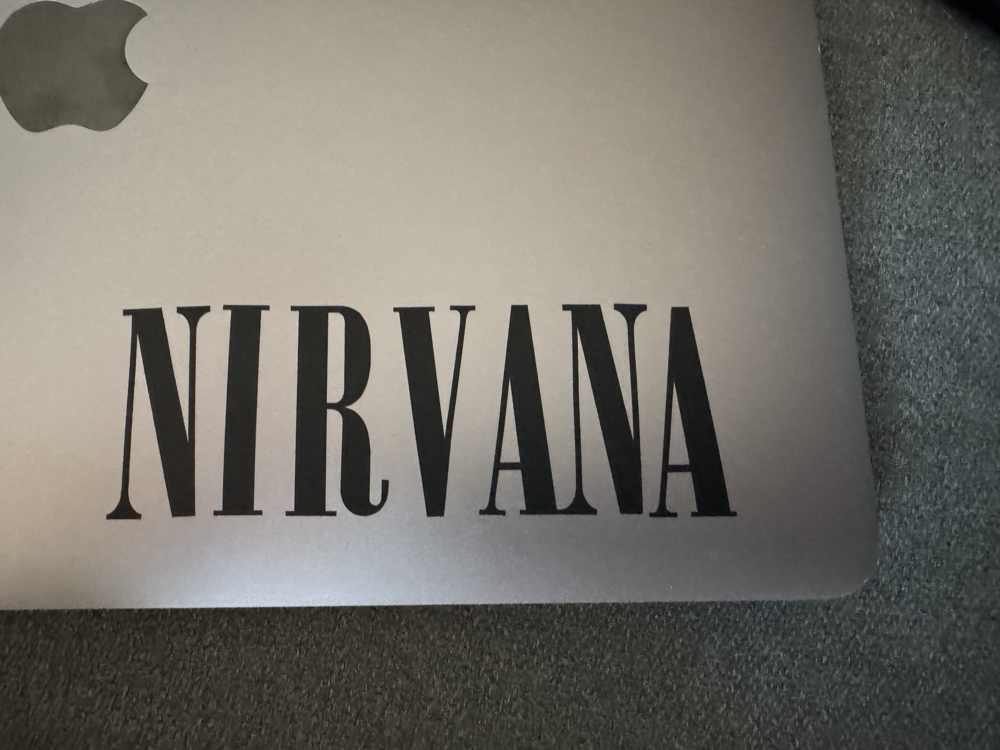
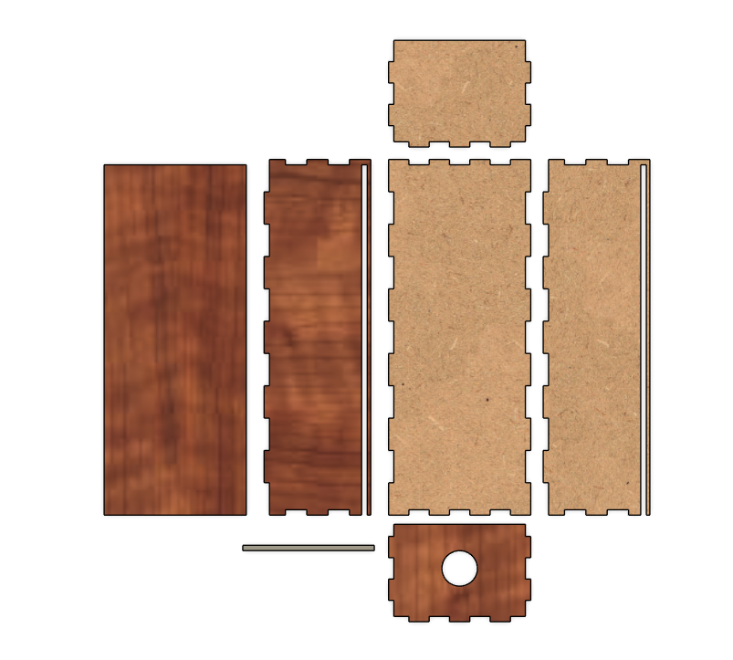

Assignment 2
Introduction
This project is divided into three parts. The first part involves using a vinyl cutter to create something, such as a sticker. The second part requires designing a parametric, interlocking model of building components made from either plywood or acrylic. The third part is essentially an important extension of the second part, focusing on selecting a laser cutter and determining the kerf for a specific material through testing.
Part One – Sticker Cutting
For this part of the project, I decided to create a sticker featuring the Nirvana logo. I found an image of the logo online and used it as a reference for my design. The picture can be seen below.

The Nirvana logo, I found it to be a cool addition to my mac laptop.
I imported the logo into Inkscape in .svg format and adjusted the workspace dimensions to match the size of the sticker. The design was scaled to fit the available material. The material colour I chose was black.
In Inkscape, I accessed the 'Fill and Stroke' settings, selected 'No Fill,' 'Flat Color,' and set the stroke width to 0.02 mm. The file was then saved as a .pdf and opened in Adobe Acrobat. From there, the .pdf was sent to the vinyl cutter using the print command, ensuring that the height and width matched the sticker’s dimensions. The vinyl cutter then executed the job perfectly on the first attempt, producing a high-quality sticker.
Once the sticker was cut, I carefully removed each letter and positioned them individually on my MacBook Pro. This process required patience, as I had to align each piece meticulously to ensure the design was perfectly straight. It was a painstaking task, but the final result was worth the effort, giving my laptop a rad look.
Now my computer looks rad :D
Part Two – Press-Fit Model
For this part, I designed a press-fit model made from 3 mm thick wood using Fusion 360. The most challenging part was deciding what to create. I considered several ideas, such as a headphone stand, a laptop stand, or a small organizer. Eventually, I settled on a simple storage box with interlocking joints.
The model was designed parametrically, allowing easy adjustments to the dimensions. Each panel had to be carefully aligned face-down to ensure the laser cutter could process them correctly.
Design
As seen in the design, there are only two types of press-fit joints used. Finger joints were added for the panels, while the top panel was designed to slide in and out, making it a removable lid. The goal was to create a storage box with easy access. This concept worked to some extent, but there were some issues. The sides of the lid were unsupported, meaning it wasn’t as fixed as intended. While still functional, it lacked stability.
Another challenge was the inserts holding the lid. They were quite thin and, as a result, fragile—one even broke during transport. In hindsight, making them slightly thicker would have improved durability. However, increasing their size would have sacrificed valuable storage space, and an overly thick insert would have looked out of place.
Despite these minor flaws, the overall fit of the joints was excellent. The connections were on the tighter end of the spectrum but still manageable. Once assembled, the box was extremely sturdy, to the point that disassembling it became quite difficult.
Kerf Testing
Before submitting the final job to the laser cutter, I needed to determine the kerf of the laser. This was done by cutting a test pattern consisting of a larger square with smaller squares cut out from within it. The steps were as follows:
- A test design was created in Fusion 360.
- The design was exported as a
.dxffile and imported into Inkscape. - The adjusted file was sent to the Epilog laser cutter.
- After cutting, I measured the width of the remaining material and the width of the cutout area.
By comparing these measurements, I determined that the laser kerf was approximately 0.17 mm for 3 mm thick wood. This value was then used to adjust the press-fit joints to ensure a snug connection.
Here is a video of the laser cutting one of the kerf tests out:Final Production
Once the kerf was determined, I arranged all parts flat on a single sheet and exported the final design for cutting. The pieces were cut using the Epilog laser cutter with the correct settings for 3 mm wood. The following images show the pieces before assembly:
Here is the box aligned on a single plane so that the Epilog laser can cut it.
Finally, I assembled the storage box by fitting the interlocking joints together. The final result was a sturdy and well-fitting wooden box.

Here is the box finally put together, very sturdy, no need for any glue whatsoever.

Here I showcase how it can be opened.

Here the box is completely open and missing one of the sliders. :/
Final Thoughts
Overall, I'm really happy with how everything turned out. I learned a few valuable lessons, like making sure the structural integrity is solid before fully committing to a design. If I had more time, I would have improved a few things, but unfortunately, I had to work with the time I had.
If anyone wants to use this design in the future, go for it! Just make sure to increase the thickness of the sliders so they’re more durable. Thanks for reading! :D